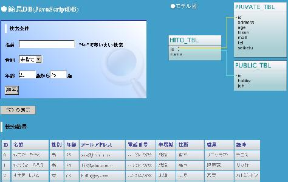
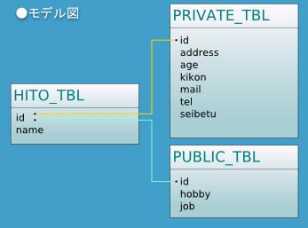
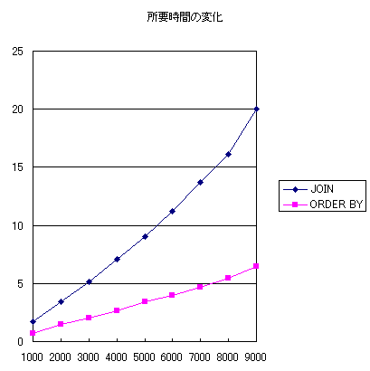

株式会社 アイプランニング
Towa Edogawabashi building 8F
Yamabuki-cho 347
Shinjuku-ku Tokyo
Phone: 03-5225-1147
javascriptのみでSQL検索を実現するjavascriptDBの調査
javascriptDBのライブラリはここからダウンロードできます。。
どのような事ができるのかは、本家のDemoを見れば大体の雰囲気が分かると思います。
AJAX+JavascriptDBで簡易CSV-RDBのサンプル
今回は、CSVをRDB風に準備、作成し、AJAXを利用してリアルタイム応答を実現するように作ってみました。

※フォームから検索条件を指定したり、SQL文自体をも打ち込むことができます。
⇒AJAX+JavascriptDB Webサンプル
●CSVデータベースのモデル図

サンプルで使用しているソースコード一式はこちら(personviewer.lzh)
向いている用途
・CGIサーバを用意できない環境で、ユーザにテーブルの検索を行わせたい。
・CSVの表示を簡易に行いたい
・複数のCSVをRDB風に行いたい。
使用方法
必要なもの
・db_core.js
・データ定義用ユーザjavascript
・HTML本体
使用手順
・HTMLにdb_core.jsをインクルード
<script type='text/javascript' src='db_core.js'>
・DBを作成
var DBTest = new Database ("DBTest");
・テーブル生成
DBTest.CreateTable("Usuario",Array("id","login","passwd","telefon"));
・レコードをインサート
DBTest.Insert("Usuario",Array(1,"rosibel","clau","934856890"));
・必要に応じてselect文を記述
mArr = DBTest.Select('select passwd from Usuario where login="rosibel"');
（view関数でhtml中に配列をTable表示することができます。）
SQLクエリ中で使えるもの
・SELECT
・日本語をキーに検索
・INSERT（専用の関数あり）
・WHERE
・LEFT JOIN
・INNER JOIN
・ORDER BY
・LIKE指定
・*による全指定
SQLクエリ中で使えないもの
・DELETE
・UPDATE
・BETWEEN句
・LEFT
・副問い合わせ
SQLクエリを記述する際の留意点
・クエリは改行を含まないように。
・テーブル名、カラム名の大文字小文字は区別される。
・単一テーブルの検索時にテーブル名を明示すると、正常に動作しない（undefinedが入る）
誤：select Person.name from Person
正：select name from Person
・複数のテーブルを使う場合、カラムにはテーブル名を明示する必要がある。
例：select Person.name, City.id from Person, City
・条件判断はjavascriptのevalで行われている。
→javascriptの演算子は使用可能
IEにおける処理時間
処理時間の増加はほぼ線形。
IEだと、スクリプトの処理に20秒以上かかると、
スクリプト中止の確認ダイアログが出る。
そのため、20秒以内に実行が終わるようなクエリ・レコード数が望ましい。
例
＜実行環境＞
OS：Windows XP Service Pack 2
CPU：Pentium 4 2.8GHz
RAM：1.0GB
IE：6.0.2900.2180 SP2
ソートを使う場合
select * from Names order by addressid
→30000レコード程度で処理時間が20秒になる。
JOINでテーブルを一つ結合
select Names.id,Names.name,Names.address,City.name from Names left join City on Names.addressid=City.addressid
→9000レコード前後で処理時間が20秒になる。

ブラウザ別処理時間（参考）
IE6とFirefox2では、
Firefox2のほうが２倍程度遅いようです。
＜1000件＞
select * from Names
IE:0.5秒
FX:0.8秒
select * from Names order by addressid
IE:0.7秒
FX:1.9秒
select Names.id,Names.name,Names.address,City.name from Names left join City on Names.addressid=City.addressid
IE:1.8秒
FX:3.3秒
＜5000件＞
select * from Names
IE:2.6秒
FX:4.2秒
select * from Names order by addressid
IE:3.5秒
FX:11.1秒
select Names.id,Names.name,Names.address,City.name from Names left join City on Names.addressid=City.addressid
IE:9.3秒
FX:約18秒（途中で警告ダイアログが表示された）
アイプランニング技術情報
技術情報TOPページ
プログラマ募集中・・・
お客さまの立場に立ってモノが作れる判断力、企画力、コンサルティング能力を磨きたくはありませんか？プログラム能力は、プロジェクトを通じて自然と能力があがるようなシステムになっています。初心者プログラマであっても３年程度で、その能力は初心者だったとは思えないくらいのスキルとなっています。
これは、「最初は誰でも初心者だ」という教育方針があるため、また、多くの社員が入社して初めてプログラミングにふれたという経験があるために自分のつまづき体験や、成功体験を含めた教育がなされているからなのです。
このようにアイプランニングでは、社員１人ひとりの個性と人間性を重視し、スキルにあったマンツーマン教育であなたを一人前のエンジニアへと成長させていきます。 それは誠実なスタッフが集まっているからこそ、どんなお客様からも信頼される企業に成長できるから。私たちはそう考えています。
プログラマを目指して会社に入ったものの、思った通りの仕事をさせてもらえなかったと思っている人、教育システムが十分でなかったためにスキルが身に付いていないと思っている人も気軽にご応募ください。パソコンのスキルに自信のない方でも、マンツーマンの研修制度で一人前に成長できるフィールドを整えておりますので安心してご応募くださいね。
知識だけでなく本当の開発力が身につく環境でのシステム開発でみつかる『やりがい』はもちろん、プライベートでも今までになかった充実感が得られますよ。